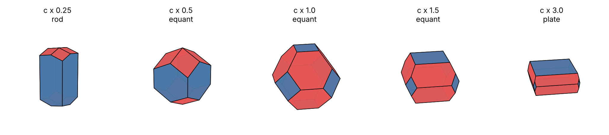
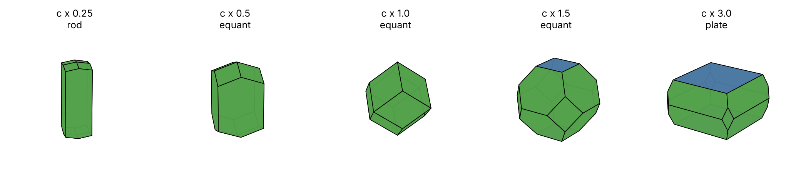
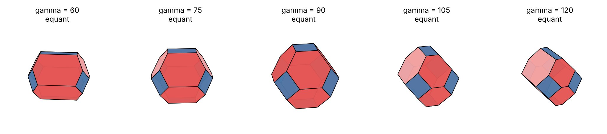

1What This Page Does
- You know
- One unit cell gives a family of crystal shapes by changing the growth-rate ratios (Morphology), and the propositions behind it (Mathematics, 1–13).
- This page adds
- The other reading of the panel's question: change the unit cell itself (its edges a, b, c and angles) and see how the crystal shape follows.
The panel said the values in the CIF file may be changed. That gives a new, hypothetical framework: the atoms keep their fractional positions and the lattice is stretched or sheared. It is no longer the measured structure, and nothing here claims that a real MOF can be deformed freely. What can be shown mathematically is exactly what carries over from the original cell and what changes (Propositions 14–16), and computationally how the shape moves.
2The Ideas, From Scratch
The six numbers of a unit cell
A unit cell is a parallelepiped described by three edge lengths a, b, c and three angles α, β, γ. A cubic cell has a = b = c and all angles 90°. Stretching c alone gives a tetragonal cell; making all three edges different gives an orthorhombic one; changing an angle gives a sheared (monoclinic or triclinic) one.
What the CIF file stores, and what moves
A CIF stores the six cell numbers and the position of each atom as a fraction of the cell edges. If only the cell numbers change, every atom moves proportionally with the cell, so the arrangement of atoms keeps the same topology while all distances change. This is the model used here.
Why the shape follows
The spacing between lattice planes, dhkl = 1/√(hTG−1h) where G = LLT is the metric tensor, depends on the cell. The BFDH rule makes the distance of each face from the crystal centre proportional to 1/deff, so changing the cell changes every face distance and therefore the shape. A cell stretched along c has widely spaced (001) planes, so the (001) faces become large and slow and the crystal becomes a plate; a cell compressed along c gives a rod.
3Change the Cell and Watch the Crystal
Choose a structure, then scale its three cell edges. The starting edge is the real one from the CIF (via spglib). The shape is computed in your browser by the same rule as the Python code, and the two agree on all 52 cases tested.
Only orthogonal cells (all angles 90°) are interactive here; sheared cells are in the tables below, computed by the Python code.
4Results for the Four MOFs

Source: code/morphology/run_deform.py; data: code/morphology/results/deform_results.json.

Source: code/morphology/run_deform.py; data: code/morphology/results/deform_results.json.
MOF-5 (Fm-3m): stretch of c
| λ | c (Å) | Operations | Habit | Shape | Height / width | Ψ | κ² |
| 0.2 | 5.17 | 64 | rod | truncated cube | 2.700 | 0.763 | 0.413 |
| 0.25 | 6.47 | 64 | rod | truncated cube | 2.250 | 0.798 | 0.263 |
| 0.3 | 7.76 | 64 | rod | truncated cube | 1.967 | 0.825 | 0.156 |
| 0.4 | 10.35 | 64 | equant | truncated cube | 1.650 | 0.864 | 0.043 |
| 0.5 | 12.93 | 64 | equant | truncated cube | 1.500 | 0.887 | 0.008 |
| 0.6 | 15.52 | 64 | equant | truncated cube | 1.433 | 0.900 | 0.001 |
| 0.8 | 20.69 | 64 | equant | truncated octahedron | 1.250 | 0.906 | 0.000 |
| 1 | 25.87 | 192 | equant | truncated octahedron | 1.000 | 0.910 | -0.000 |
| 1.25 | 32.33 | 64 | equant | truncated octahedron | 0.800 | 0.905 | 0.003 |
| 1.5 | 38.80 | 64 | equant | truncated octahedron | 0.667 | 0.892 | 0.015 |
| 2 | 51.73 | 64 | plate | truncated octahedron | 0.500 | 0.859 | 0.054 |
| 2.5 | 64.67 | 64 | plate | truncated octahedron | 0.400 | 0.824 | 0.095 |
| 3 | 77.60 | 64 | plate | truncated octahedron | 0.333 | 0.791 | 0.128 |
HKUST-1 (Fm-3m): stretch of c
| λ | c (Å) | Operations | Habit | Shape | Height / width | Ψ | κ² |
| 0.2 | 5.26 | 64 | rod | truncated cube | 2.700 | 0.763 | 0.413 |
| 0.25 | 6.57 | 64 | rod | truncated cube | 2.250 | 0.798 | 0.263 |
| 0.3 | 7.89 | 64 | rod | truncated cube | 1.967 | 0.825 | 0.156 |
| 0.4 | 10.52 | 64 | equant | truncated cube | 1.650 | 0.864 | 0.043 |
| 0.5 | 13.15 | 64 | equant | truncated cube | 1.500 | 0.887 | 0.008 |
| 0.6 | 15.78 | 64 | equant | truncated cube | 1.433 | 0.900 | 0.001 |
| 0.8 | 21.04 | 64 | equant | truncated octahedron | 1.250 | 0.906 | 0.000 |
| 1 | 26.30 | 192 | equant | truncated octahedron | 1.000 | 0.910 | -0.000 |
| 1.25 | 32.87 | 64 | equant | truncated octahedron | 0.800 | 0.905 | 0.003 |
| 1.5 | 39.45 | 64 | equant | truncated octahedron | 0.667 | 0.892 | 0.015 |
| 2 | 52.59 | 64 | plate | truncated octahedron | 0.500 | 0.859 | 0.054 |
| 2.5 | 65.74 | 64 | plate | truncated octahedron | 0.400 | 0.824 | 0.095 |
| 3 | 78.89 | 64 | plate | truncated octahedron | 0.333 | 0.791 | 0.128 |
UiO-66 (F-43m): stretch of c
| λ | c (Å) | Operations | Habit | Shape | Height / width | Ψ | κ² |
| 0.2 | 4.10 | 32 | rod | truncated cube | 2.700 | 0.763 | 0.413 |
| 0.25 | 5.13 | 32 | rod | truncated cube | 2.250 | 0.798 | 0.263 |
| 0.3 | 6.16 | 32 | rod | truncated cube | 1.967 | 0.825 | 0.156 |
| 0.4 | 8.21 | 32 | equant | truncated cube | 1.650 | 0.864 | 0.043 |
| 0.5 | 10.26 | 32 | equant | truncated cube | 1.500 | 0.887 | 0.008 |
| 0.6 | 12.31 | 32 | equant | truncated cube | 1.433 | 0.900 | 0.001 |
| 0.8 | 16.41 | 32 | equant | truncated octahedron | 1.250 | 0.906 | 0.000 |
| 1 | 20.52 | 96 | equant | truncated octahedron | 1.000 | 0.910 | 0.000 |
| 1.25 | 25.65 | 32 | equant | truncated octahedron | 0.800 | 0.905 | 0.003 |
| 1.5 | 30.78 | 32 | equant | truncated octahedron | 0.667 | 0.892 | 0.015 |
| 2 | 41.04 | 32 | plate | truncated octahedron | 0.500 | 0.859 | 0.054 |
| 2.5 | 51.30 | 32 | plate | truncated octahedron | 0.400 | 0.824 | 0.095 |
| 3 | 61.55 | 32 | plate | truncated octahedron | 0.333 | 0.791 | 0.128 |
ZIF-8 (I-43m): stretch of c
| λ | c (Å) | Operations | Habit | Shape | Height / width | Ψ | κ² |
| 0.2 | 3.40 | 16 | rod | rhombic dodecahedron | 2.600 | 0.706 | 0.632 |
| 0.25 | 4.25 | 16 | rod | rhombic dodecahedron | 2.125 | 0.743 | 0.496 |
| 0.3 | 5.10 | 16 | rod | rhombic dodecahedron | 1.817 | 0.772 | 0.373 |
| 0.4 | 6.80 | 16 | rod | rhombic dodecahedron | 1.450 | 0.817 | 0.188 |
| 0.5 | 8.50 | 16 | equant | rhombic dodecahedron | 1.250 | 0.848 | 0.082 |
| 0.6 | 10.20 | 16 | equant | rhombic dodecahedron | 1.133 | 0.871 | 0.030 |
| 0.8 | 13.59 | 16 | equant | rhombic dodecahedron | 1.025 | 0.897 | 0.002 |
| 1 | 16.99 | 48 | equant | rhombic dodecahedron | 1.000 | 0.905 | -0.000 |
| 1.25 | 21.24 | 16 | equant | truncated rhombic dodecahedron | 0.976 | 0.909 | 0.000 |
| 1.5 | 25.49 | 16 | equant | truncated rhombic dodecahedron | 0.923 | 0.910 | 0.000 |
| 2 | 33.98 | 16 | equant | truncated rhombic dodecahedron | 0.800 | 0.897 | 0.009 |
| 2.5 | 42.48 | 16 | equant | truncated rhombic dodecahedron | 0.690 | 0.875 | 0.034 |
| 3 | 50.97 | 16 | plate | truncated rhombic dodecahedron | 0.600 | 0.850 | 0.065 |
Habit follows the Zingg classification from the principal radii of gyration: plate when the smallest radius is under 2/3 of the middle one, rod when the middle one is under 2/3 of the largest, equant otherwise. The Shape column names the combinatorial type, that is, which face families appear and how many faces each has; in a stretched cell the same type is elongated or flattened, so a rod listed as a truncated cube is a truncated cube drawn out along c. The three F-centred frameworks have identical rows because the lattice-only rule cannot tell them apart (Proposition 16, consequence iii).

Source: code/morphology/run_deform.py; data: code/morphology/results/deform_results.json.
| Structure | γ = 60° | γ = 75° | γ = 90° | γ = 105° | γ = 120° |
| MOF-5 | tetrahedral trunc. octahedron (32 ops) | tetrahedral trunc. octahedron (32 ops) | truncated octahedron (192 ops) | tetrahedral trunc. octahedron (32 ops) | tetrahedral trunc. octahedron (32 ops) |
| HKUST-1 | tetrahedral trunc. octahedron (32 ops) | tetrahedral trunc. octahedron (32 ops) | truncated octahedron (192 ops) | tetrahedral trunc. octahedron (32 ops) | tetrahedral trunc. octahedron (32 ops) |
| UiO-66 | truncated octahedron (16 ops) | truncated octahedron (16 ops) | truncated octahedron (96 ops) | truncated octahedron (16 ops) | truncated octahedron (16 ops) |
| ZIF-8 | truncated rhombic dodecahedron (8 ops) | rhombic dodecahedron (8 ops) | rhombic dodecahedron (48 ops) | rhombic dodecahedron (8 ops) | truncated rhombic dodecahedron (8 ops) |
5What This Does and Does Not Show
- It is a hypothetical framework. The edited cell is not the CIF's structure. The result says how the shape of this family of cells behaves; it does not say a real MOF can reach those cells (flexible MOFs can reach some).
- The shape rule is the lattice-only BFDH. The graph and force-field rules (Phase 3, Phase 4) have not been recomputed for deformed cells. Under BFDH three of the four MOFs are indistinguishable.
- Plates are easy, rods are harder. Making a plate needs stretching the cell by about 2 to 3. A rod needs compressing a cell edge to between 0.3 and 0.4 of its length, because slanted planes cap the height (Proposition 16, consequence i).
- The 40 largest-spacing families are used (the earlier pages use 10). Ten families can leave the shape unbounded for strongly anisotropic cells, which the tests showed.